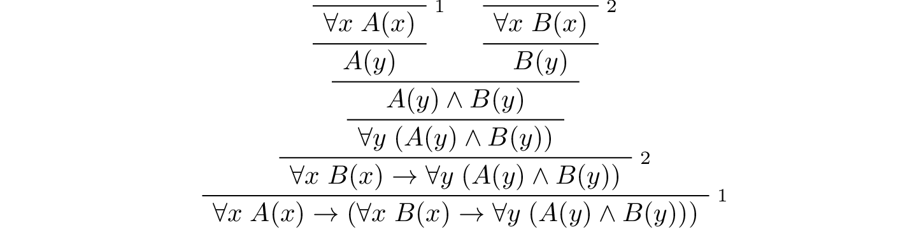
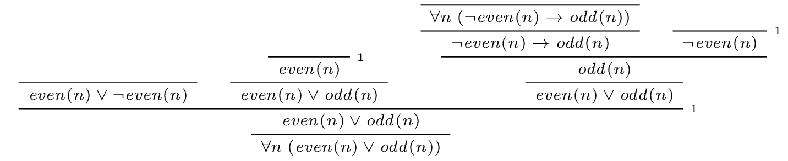
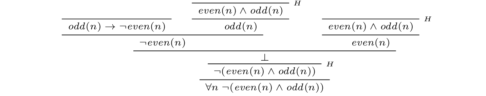
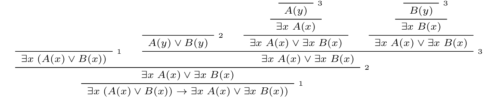
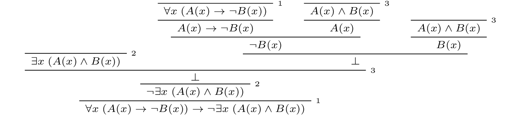
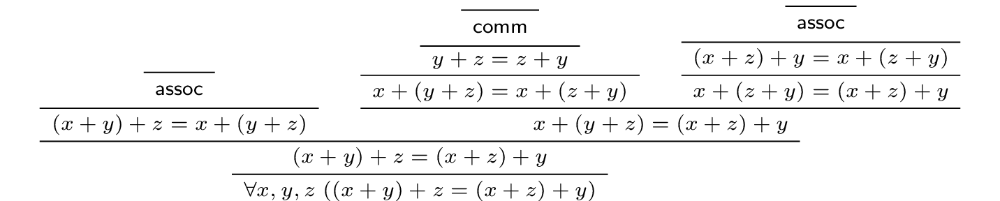
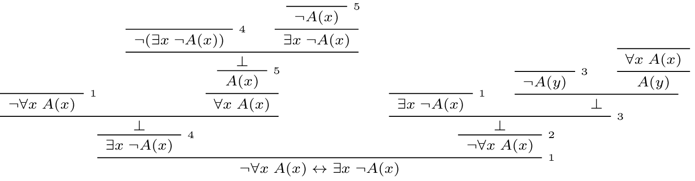

8. Natural Deduction for First Order Logic¶
8.1. Rules of Inference¶
In the last chapter, we discussed the language of first-order logic, and the rules that govern their use. We summarize them here:
The universal quantifier:

In the introduction rule, \(x\) should not be free in any uncanceled hypothesis. In the elimination rule, \(t\) can be any term that does not clash with any of the bound variables in \(A\).
The existential quantifier:

In the introduction rule, \(t\) can be any term that does not clash with any of the bound variables in \(A\). In the elimination rule, \(y\) should not be free in \(B\) or any uncanceled hypothesis.
Equality:

Strictly speaking, only \(\mathrm{refl}\) and the second substitution rule are necessary. The others can be derived from them.
8.2. The Universal Quantifier¶
The following example of a proof in natural deduction shows that if, for every \(x\), \(A(x)\) holds, and for every \(x\), \(B(x)\) holds, then for every \(x\), they both hold:
Notice that neither of the assumptions 1 or 2 mention \(y\), so that \(y\) is really “arbitrary” at the point where the universal quantifiers are introduced.
Here is another example:
As an exercise, try proving the following:
Here is a more challenging exercise. Suppose I tell you that, in a town, there is a (male) barber that shaves all and only the men who do not shave themselves. You can show that this is a contradiction, arguing informally, as follows:
By the assumption, the barber shaves himself if and only if he does not shave himself. Call this statement (*).
Suppose the barber shaves himself. By (*), this implies that he does not shave himself, a contradiction. So, the barber does not shave himself.
But using (*) again, this implies that the barber shaves himself, which contradicts the fact we just showed, namely, that the barber does not shave himself.
Try to turn this into a formal argument in natural deduction.
Let us return to the example of the natural numbers, to see how deductive notions play out there. Suppose we have defined \(\mathit{even}\) and \(\mathit{odd}\) in such a way that we can prove:
\(\forall n \; (\neg \mathit{even}(n) \to \mathit{odd}(n))\)
\(\forall n \; (\mathit{odd}(n) \to \neg \mathit{even}(n))\)
Then we can go on to derive \(\forall n \; (\mathit{even}(n) \vee \mathit{odd}(n))\) as follows:
We can also prove and \(\forall n \; \neg (\mathit{even}(n) \wedge \mathit{odd}(n))\):
As we move from modeling basic rules of inference to modeling actual mathematical proofs, we will tend to shift focus from natural deduction to formal proofs in Lean. Natural deduction has its uses: as a model of logical reasoning, it provides us with a convenient means to study metatheoretic properties such as soundness and completeness. For working within the system, however, proof languages like Lean’s tend to scale better, and produce more readable proofs.
8.3. The Existential Quantifier¶
Remember that the intuition behind the elimination rule for the existential quantifier is that if we know \(\exists x \; A(x)\), we can temporarily reason about an arbitrary element \(y\) satisfying \(A(y)\) in order to prove a conclusion that doesn’t depend on \(y\). Here is an example of how it can be used. The next proof says that if we know there is something satisfying both \(A\) and \(B\), then we know, in particular, that there is something satisfying \(A\).
The following proof shows that if there is something satisfying either \(A\) or \(B\), then either there is something satisfying \(A\), or there is something satisfying \(B\).
The following example is more involved:
In this proof, the existential elimination rule (the line labeled \(3\)) is used to cancel two hypotheses at the same time. Note that when this rule is applied, the hypothesis \(\forall x \; (A(x) \to \neg B(x))\) has not yet been canceled. So we have to make sure that this formula doesn’t contain the variable \(x\) freely. But this is o.k., since this hypothesis contains \(x\) only as a bound variable.
Another example is that if \(x\) does not occur in \(P\), then \(\exists x \; P\) is equivalent to \(P\):
This is short but tricky, so let us go through it carefully. On the left, we assume \(\exists x \; P\) to conclude \(P\). We assume \(P\), and now we can immediately cancel this assumption by existential elimination, since \(x\) does not occur in \(P\), so it doesn’t occur freely in any assumption or in the conclusion. On the right we use existential introduction to conclude \(\exists x \; P\) from \(P\).
8.4. Equality¶
Recall the natural deduction rules for equality:
Keep in mind that we have implicitly fixed some first-order language, and \(r\), \(s\), and \(t\) are any terms in that language. Recall also that we have adopted the practice of using functional notation with terms. For example, if we think of \(r(x)\) as the term \((x + y) \times (z + 0)\) in the language of arithmetic, then \(r(0)\) is the term \((0 + y) \times (z + 0)\) and \(r(u + v)\) is \(((u + v) + y) \times (z + 0)\). So one example of the first inference on the second line is this:
The second axiom on that line is similar, except now \(P(x)\) stands for any formula, as in the following inference:
Notice that we have written the reflexivity axiom, \(t = t\), as a rule with no premises. If you use it in a proof, it does not count as a hypothesis; it is built into the logic.
In fact, we can think of the first inference on the second line as a special case of the second one. Consider, for example, the formula \(((u + v) + y) \times (z + 0) = (x + y) \times (z + 0)\). If we plug \(u + v\) in for \(x\), we get an instance of reflexivity. If we plug in \(0\), we get the conclusion of the first example above. The following is therefore a derivation of the first inference, using only reflexivity and the second substitution rule above:
Roughly speaking, we are replacing the second instance of \(u + v\) in an instance of reflexivity with \(0\) to get the conclusion we want.
Equality rules let us carry out calculations in symbolic logic. This typically amounts to using the equality rules we have already discussed, together with a list of general identities. For example, the following identities hold for any real numbers \(x\), \(y\), and \(z\):
commutativity of addition: \(x + y = y + x\)
associativity of addition: \((x + y) + z = x + (y + z)\)
additive identity: \(x + 0 = 0 + x = x\)
additive inverse: \(-x + x = x + -x = 0\)
multiplicative identity: \(x \cdot 1 = 1 \cdot x = x\)
commutativity of multiplication: \(x \cdot y = y \cdot x\)
associativity of multiplication: \((x \cdot y) \cdot z = x \cdot (y \cdot z)\)
distributivity: \(x \cdot (y + z) = x \cdot y + x \cdot z, \quad (x + y) \cdot z = x \cdot z + y \cdot z\)
You should imagine that there are implicit universal quantifiers in front of each statement, asserting that the statement holds for any values of \(x\), \(y\), and \(z\). Note that \(x\), \(y\), and \(z\) can, in particular, be integers or rational numbers as well. Calculations involving real numbers, rational numbers, or integers generally involve identities like this.
The strategy is to use the elimination rule for the universal quantifier to instantiate general identities, use symmetry, if necessary, to orient an equation in the right direction, and then using the substitution rule for equality to change something in a previous result. For example, here is a natural deduction proof of a simple identity, \(\forall x, y, z \; ((x + y) + z = (x + z) + y)\), using only commutativity and associativity of addition. We have taken the liberty of using a brief name to denote the relevant identities, and combining multiple instances of the universal quantifier introduction and elimination rules into a single step.
There is generally nothing interesting to be learned from carrying out such calculations in natural deduction, but you should try one or two examples to get the hang of it, and then take pleasure in knowing that it is possible.
8.5. Counterexamples and Relativized Quantifiers¶
Consider the statement:
Every prime number is odd.
In first-order logic, we could formulate this as \(\forall p \; (\mathit{prime}(p) \to \mathit{odd}(p))\). This statement is false, because there is a prime number that is even, namely the number 2. This is called a counterexample to the statement.
More generally, given a formula \(\forall x \; A(x)\), a counterexample is a value \(t\) such that \(\neg A(t)\) holds. Such a counterexample shows that the original formula is false, because we have the following equivalence: \(\neg \forall x \; A(x) \leftrightarrow \exists x \; \neg A(x)\). So if we find a value \(t\) such that \(\neg A(t)\) holds, then by the existential introduction rule we can conclude that \(\exists x \; \neg A(x)\), and then by the above equivalence we have \(\neg \forall x \; A(x)\). Here is a proof of the equivalence:
One remark about the proof: at the step marked by \(4\) we cannot use the existential introduction rule, because at that point our only assumption is \(\neg \forall x \; A(x)\), and from that assumption we cannot prove \(\neg A(t)\) for a particular term \(t\). So we use a proof by contradiction there.
As an exercise, prove the “dual” equivalence yourself: \(\neg \exists x \; A(x) \leftrightarrow \forall x \; \neg A(x)\). This can be done without using proof by contradiction.
In Chapter 7 we saw examples of how to use relativization to restrict the scope of a universal quantifier. Suppose we want to say “every prime number is greater than 1”. In first order logic this can be written as \(\forall n (\mathit{prime}(n) \to n > 1)\). The reason is that the original statement is equivalent to the statement “for every natural number, if it is prime, then it is greater than 1”. Similarly, suppose we want to say “there exists a prime number greater than 100.” This is equivalent to saying “there exists a natural number which is prime and greater than 100,” which can be expressed as \(\exists n \; (\mathit{prime}(n) \wedge n > 100)\).
As an exercise you can prove the above results about negations of quantifiers also for relativized quantifiers. Specifically, prove the following statements:
\(\neg \exists x \; (A(x) \wedge B(x)) \leftrightarrow \forall x \; ( A(x) \to \neg B(x))\)
\(\neg \forall x \; (A(x) \to B(x)) \leftrightarrow \exists x (A(x) \wedge \neg B(x))\)
For reference, here is a list of valid sentences involving quantifiers:
\(\forall x \; A \leftrightarrow A\) if \(x\) is not free in \(A\)
\(\exists x \; A \leftrightarrow A\) if \(x\) is not free in \(A\)
\(\forall x \; (A(x) \land B(x)) \leftrightarrow \forall x \; A(x) \land \forall x \; B(x)\)
\(\exists x \; (A(x) \land B) \leftrightarrow \exists \; x A(x) \land B\) if \(x\) is not free in \(B\)
\(\exists x \; (A(x) \lor B(x)) \leftrightarrow \exists \; x A(x) \lor \exists \; x B(x)\)
\(\forall x \; (A(x) \lor B) \leftrightarrow \forall x \; A(x) \lor B\) if \(x\) is not free in \(B\)
\(\forall x \; (A(x) \to B) \leftrightarrow (\exists x \; A(x) \to B)\) if \(x\) is not free in \(B\)
\(\exists x \; (A(x) \to B) \leftrightarrow (\forall x \; A(x) \to B)\) if \(x\) is not free in \(B\)
\(\forall x \; (A \to B(x)) \leftrightarrow (A \to \forall x \; B(x))\) if \(x\) is not free in \(A\)
\(\exists x \; (A(x) \to B) \leftrightarrow (A(x) \to \exists \; x B)\) if \(x\) is not free in \(B\)
\(\exists x \; A(x) \leftrightarrow \neg \forall x \; \neg A(x)\)
\(\forall x \; A(x) \leftrightarrow \neg \exists x \; \neg A(x)\)
\(\neg \exists x \; A(x) \leftrightarrow \forall x \; \neg A(x)\)
\(\neg \forall x \; A(x) \leftrightarrow \exists x \; \neg A(x)\)
All of these can be derived in natural deduction. The last two allow us to push negations inwards, so we can continue to put first-order formulas in negation normal form. Other rules allow us to bring quantifiers to the front of any formula, though, in general, there will be multiple ways of doing this. For example, the formula
is equivalent to both
and
A formula with all the quantifiers in front is said to be in prenex form.
8.6. Exercises¶
Give a natural deduction proof of
\[\forall x \; (A(x) \to B(x)) \to (\forall x \; A(x) \to \forall x \; B(x)).\]Give a natural deduction proof of \(\forall x \; B(x)\) from hypotheses \(\forall x \; (A(x) \vee B(x))\) and \(\forall y \; \neg A(y)\).
From hypotheses \(\forall x \; (\mathit{even}(x) \vee \mathit{odd}(x))\) and \(\forall x \; (\mathit{odd}(x) \to \mathit{even}(s(x)))\) give a natural deduction proof \(\forall x \; (\mathit{even}(x) \vee \mathit{even}(s(x)))\). (It might help to think of \(s(x)\) as the function defined by \(s(x) = x + 1\).)
Give a natural deduction proof of \(\exists x \; A(x) \vee \exists x \; B(x) \to \exists x \; (A(x) \vee B(x))\).
Give a natural deduction proof of \(\exists x \; (A(x) \wedge C(x))\) from the assumptions \(\exists x \; (A(x) \wedge B(x))\) and \(\forall x \; (A(x) \wedge B(x) \to C(x))\).
Prove some of the other equivalences in the last section.
Consider some of the various ways of expressing “nobody trusts a politician” in first-order logic:
\(\forall x \; (\mathit{politician}(x) \to \forall y \; (\neg \mathit{trusts}(y,x)))\)
\(\forall x,y \; (\mathit{politician}(x) \to \neg \mathit{trusts}(y,x))\)
\(\neg \exists x,y \; (\mathit{politician}(x) \wedge \mathit{trusts}(y,x))\)
\(\forall x, y \; (\mathit{trusts}(y,x) \to \neg \mathit{politician}(x))\)
They are all logically equivalent. Show this for the second and the fourth, by giving natural deduction proofs of each from the other. (As a shortcut, in the \(\forall\) introduction and elimination rules, you can introduce / eliminate both variables in one step.)
Formalize the following statements, and give a natural deduction proof in which the first three statements appear as (uncancelled) hypotheses, and the last line is the conclusion:
Every young and healthy person likes baseball.
Every active person is healthy.
Someone is young and active.
Therefore, someone likes baseball.
Use \(Y(x)\) for “is young,” \(H(x)\) for “is healthy,” \(A(x)\) for “is active,” and \(B(x)\) for “likes baseball.”
Give a natural deduction proof of \(\forall x, y, z \; (x = z \to (y = z \to x = y))\) using the equality rules in Section 8.4.
Give a natural deduction proof of \(\forall x, y \; (x = y \to y = x)\) using only these two hypotheses (and none of the new equality rules):
\(\forall x \; (x = x)\)
\(\forall u, v, w \; (u = w \to (v = w \to u = v))\)
(Hint: Choose instantiations of \(u\), \(v\), and \(w\) carefully. You can instantiate all the universal quantifiers in one step, as on the last homework assignment.)
Give a natural deduction proof of \(\neg \exists x \; (A(x) \wedge B(x)) \leftrightarrow \forall x \; (A(x) \to \neg B(x))\)
Give a natural deduction proof of \(\neg \forall x \; (A(x) \to B(x)) \leftrightarrow \exists x \; (A(x) \wedge \neg B(x))\)
Remember that both the following express \(\exists!x \; A(x)\), that is, the statement that there is a unique \(x\) satisfying \(A(x)\):
\(\exists x \; (A(x) \wedge \forall y \; (A(y) \to y = x))\)
\(\exists x \; A(x) \wedge \forall y \; \forall y' \; (A(y) \wedge A(y') \to y = y')\)
Do the following:
Give a natural deduction proof of the second, assuming the first as a hypothesis.
Give a natural deduction proof of the first, asssuming the second as a hypothesis.
(Warning: these are long.)